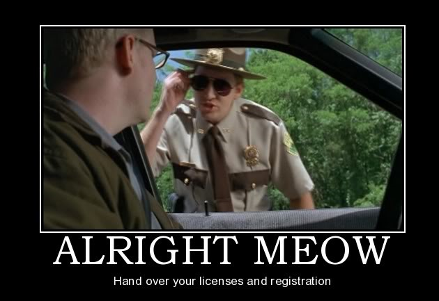

What We Do
Save the Penguins is dedicated to raising awareness of the effects of climate change on penguins on the Antarctic Peninsula. When it gets warmer, it rains. When it rains, penguin chicks die. You can help by insulating your house, carpooling, yadda yadda.
